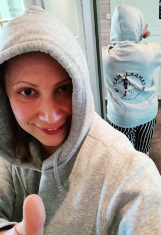
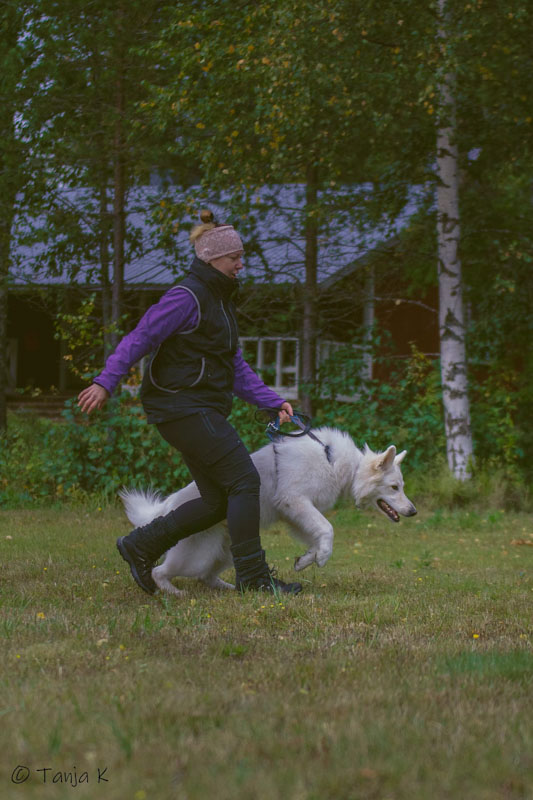

Team Laamat on syntynyt harrastajien tarpeesta löytää kannustavaa,
osallistuvaa ja toisia arvostavaa treeniseuraa rotu- ja lajirajojen
ylitse. Treenikentillä Team Laaman jäsenet ovat kaikki saman
arvoisia kokemuksesta huolimatta ja kaikki osallistuvat treeneihin
aktiivisesti. Muiden mielipiteitä arvostetaan, mutta ei kuitenkaan
hyssytellä tai unohdeta perimmäistä tarkoitusta: kehittyminen ja
oppiminen. Kaikissa treeneissä osallistujien toivotaan seuraavan
suorittavia koirakkoja ja auttamaan kanssatreenajia aktiivisesti ja
kunnioittaen.

Jokainen jäsen saa oman tiimihupparin
Jäsenille on perustettu WhatsApp ryhmä, jossa voi huudella
treeniseuraa, kysyä apua ja vaihtaa kuulumisia. Team Laamat
järjestävät vähintään kerran vuodessa jäsenille yhteisen
tapahtumapäivän treenaamisen ja illanvieton parissa. Team Laamojen
arvoihin kuuluvat koiran turvallisuudesta huolehtiminen,
yhteishengen vaaliminen, avoin keskustelu, kannustaminen ja toisten
auttaminen. Pääset tarkemmin tutustumaan toimijoihimme
täältä
Miksi harrastaisin koirani kanssa?
Harrastaminen koiran kanssa lisää koiran hyvinvointia sekä
fyysisesti, että henkisesti sekä parantaa koiran ja omistajan
välistä suhdetta. Kaikki harrastaminen perustuu
koira-omistajasuhteelle, jota rakennetaan, kehitetään ja
ylläpidetään koko koiran elämän ajan. Hyvä suhde mahdollistaa
paremman hallinnan treenikenttien lisäksi myös arjessa, kun koira
luottaa omistajaansa ja siihen, että hän toimii aina reilusti ja
oikeudenmukaisesti. Hyvä koira-omistajasuhde tekee koiran kanssa
touhuamisesta hauskempaa, sillä hyvä suhde tarkoittaa myös sitä,
että tunnette koirasi kanssa toisenne. Koirasi osaa lukea sinun
viestejäsi oikein ja ennakoida toimintaansa sekä toisin päin.
Laamoissa harrastaminen ei ole pelkkää temppujen opettamista
koiralle, vaan pohdimme myös syvempiä syy-seuraussuhteita koiran
käytökselle ja mahdollisille ongelmatilanteille ja korostamme
harjoittelussa pohjatyön, eli suhteen, merkitystä.

Koira on perimmäiseltä luonteeltaan peto, saalistaja. Näin ollen
kaikilla koirilla on sisäsyntyinen toimintaketju, jota kutsutaan
metsästyketjuksi. Lue lisää metsästyskäyttäytymisestä
täältä. Joillain roduilla ketjun tiettyjä osia on haluttu korostaa ja
toisia loiventaa, alkuperäisen käyttötarkoituksen mukaisesti. Tämä
ei kuitenkaan poista sitä, että jokaisella koirayksilölla on
olemassa lajinomaiset tarpeensa, joihin myös metsästyskäyttäytyminen
kuuluu. Näiden tarpeiden laiminlyönti aiheuttaa usein ongelmia
koiran käyttäytymisessä ja aiheuttaa koiralle turhaa stressiä (lue
lisää koiran stressistä
täällä. Harrastamalla koirasi kanssa opit tuntemaan koirasi tarpeet ja
tarjoat samalla koirallesi sen kaipaamaa aktivointia, joka taas
vähentää koirasi stressiä ja siitä tulee tyytyväisempi koirakaveri
olit sitten tavoitteellinen kisaaja tai metsälenkkeilijä.
Harrastamisen koiran kanssa voi aloittaa missä vaiheessa tahansa.
Treenit suhteutetaan aina koirakon (koira + ohjaaja) tason
mukaiseksi. Muut treenaajat ovat aktiivisesti mukana harjoitusten
suunnittelussa, jos ohjaajana et osaa vielä itse päättää mikä olisi
parasta teille juuri nyt.
Muistathan kuitenkin, että koira ei välitä
tavoitteista tai kisamenestyksestä, sille on tärkeintä, että se
pääsee toteuttamaan omia tarpeitaan sinun kanssasi.